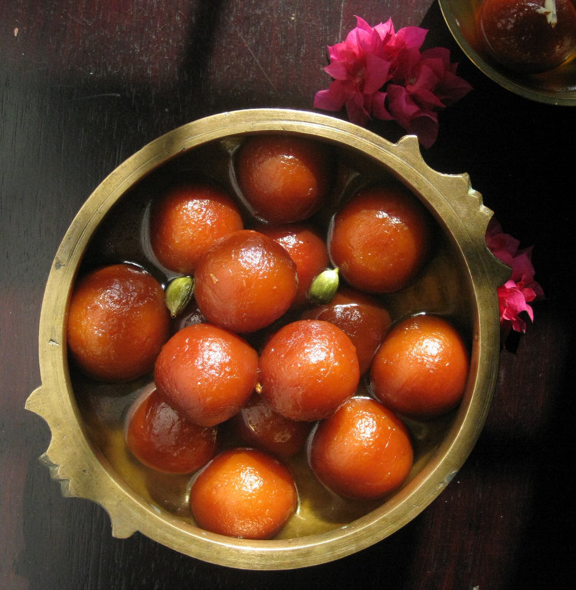
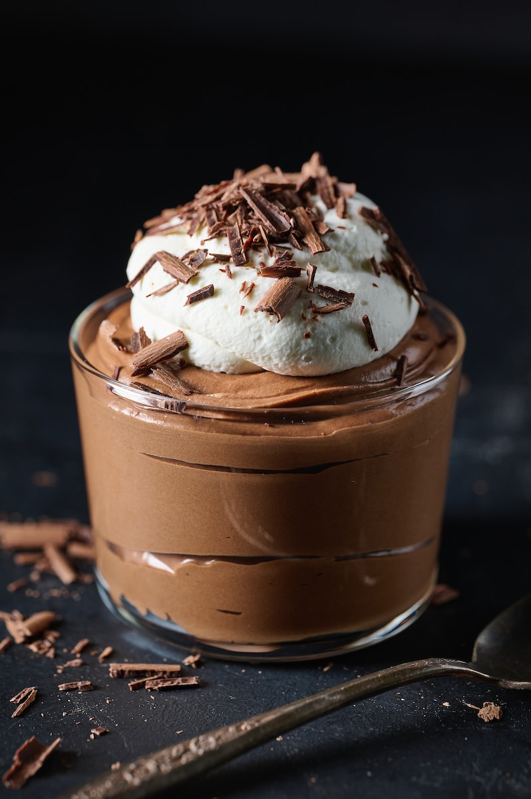

Gulab Jamun
- 1 cup dry milk powder
- 3 tablespoons all-purpose flour
- 2 tablespoons ghee (clarified butter), melted
- ½ teaspoon baking powder
- ½ cup warm milk
- 1 tablespoon chopped almonds (Optional)
- 1 tablespoon chopped pistachio nuts (Optional)
- 1 tablespoon golden raisins (Optional)
- 1 pinch ground cardamom
- 1 quart vegetable oil for deep frying
- 1 ¼ cups white sugar
- 7 fluid ounces water
- 1 teaspoon rose water
- 1 pinch ground cardamom
Ingredients
Directions
- In a large bowl, stir together the milk powder, flour, baking powder, and cardamom. Stir in the almonds, pistachios and golden raisins. Mix in the melted ghee, then pour in the milk, and continue to mix until well blended. Cover and let rest for 20 minutes.
- In a large skillet, stir together the sugar, water, rose water and a pinch of cardamom. Bring to a boil, and simmer for just a minute. Set aside.
- Fill a large heavy skillet halfway with oil. Heat over medium heat for at least 5 minutes. Knead the dough, and form into about 20 small balls. Reduce the heat of the oil to low, and fry the balls in one or two batches. After about 5 minutes, they will start to float, and expand to twice their original size, but the color will not change much. After the jamun float, increase the heat to medium, and turn them frequently until light golden. Remove from the oil to paper towels using a slotted spoon, and allow to cool. Drain on paper towels and allow to cool slightly.
- Place the balls into the skillet with the syrup. Simmer over medium heat for about 5 minutes, squeezing them gently to soak up the syrup. Serve immediately, or chill.

Kaju Katli
- 1 ½ cups cashews
- 6 pods green cardamom
- ¾ cup white sugar
- 6 tablespoons water
- 1 teaspoon ghee (clarified butter), or as needed
Ingredients
Directions
- Blend cashews in a grinder just until they're in powder form. Don't overblend or they will start releasing their oil; we want the powder to remain dry.
- Remove green cardamom from the pods. Crush them into a powder with a mortar and pestle.
- Combine sugar and water in a nonstick pan over medium-high heat. Cook until sugar has completely dissolved, then bring to a boil. Lower the heat to medium and add cashew powder; stir thoroughly, making sure there are no lumps. Continue to cook and stir until it becomes a little thick.
- Add crushed cardamom powder and ghee; keep mixing and cooking until mixture thickens and starts separating from the sides of the pan. If it doesn't release from the pan, add some more ghee and mix again; it should look moist and sticky and not at all dry. Check to see if it's done by taking a spoonful and cooling it a bit; when you mold it into a ball and the texture is like fudge, it's done.
- Transfer mixture to a greased or parchment-lined plate and let cool until only slightly warm. Grease your palms and knead on parchment paper on a flat surface to form a very smooth dough, 2 to 3 minutes. Roll evenly to a thickness of 1/4 inch.
- Let rolled dough cool completely. Cut kaju katli into desired shapes. Serve at room temperature or cold.

Chocolate Mousse
- 3 1/2 ounces dark chocolate (62% cacao is ideal)
- 1 tablespoon unsalted butter
- 2 large egg yolks
- 1 tablespoon white sugar
- 1/4 cup water
- 1 tiny pinch salt
- 1/2 cup chilled heavy whipping cream
Ingredients
Directions
- Break or chop dark chocolate into small pieces, set aside with butter.
- In a metal bowl, whisk egg yolks, sugar, water, and salt. Cook over medium-low heat, whisking constantly, until thick, foamy, and hot (145-150°F).
- Chef's Note: Use a saucepan if needed, ensuring the whisk reaches all corners to prevent egg sticking.
- Once hot and thick, remove egg mixture from heat. Add chocolate and butter, whisk until melted. Let rest, whisking occasionally, to cool to just above or room temperature (not warm when folded into cream).
- In a separate bowl, whisk chilled heavy cream until medium stiff peaks form (be careful not to over-whip).
- Gently fold 1/3 of chocolate mixture into whipped cream until almost incorporated. Then fold in remaining chocolate, maintaining air in the mousse.
- Transfer mousse to 4 serving dishes, wrap, and chill in refrigerator for at least 1 hour before serving.